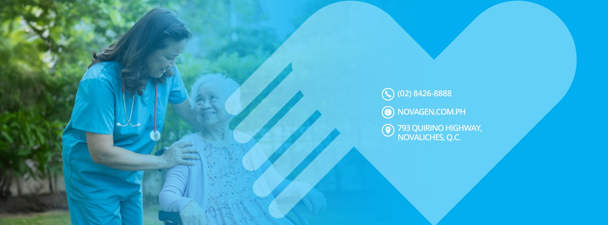

CT Scan (Cranial, Chest, Abdomen)
Plain and contrast studies from ₱5,500 — CT stonogram and whole abdomen packages available.
793 Quirino Highway · Gulod, Novaliches · Quezon City
The Tan family's legacy of care since 1997 — accessible, affordable, and compassionate healthcare for the Novaliches community. #AlagangNovaGen: where patients are family.
From general consultations to specialty centers — confirm availability and current rates when you call the trunkline.
Plain and contrast studies from ₱5,500 — CT stonogram and whole abdomen packages available.
Cardiac imaging and 24-hour blood pressure monitoring for the Heart Unit.
Breast cancer screening as part of the hospital's cancer screening program.
Video gastroscopy and colonoscopy, with combined package options.
Pioneer in state-of-the-art and affordable eye treatments and surgeries.
Sessions available Monday to Friday for renal patients.
Maternal care and a dedicated Neonatal Intensive Care Unit.
General surgery, internal medicine, cardiology, and geriatric care.
Comprehensive PT center plus medical acupuncture and pain management.
Additional units and community programs run alongside the hospital's core departments.
Center for Minimally Invasive Surgery
Laparoscopic and less-invasive surgical options.
TB DOTS Clinic
Every Monday, 8:00 AM–4:00 PM.
Wound Care & Treatment Center
Now ready to serve — call for appointments.
Cancer Screening Program
Early detection scheduling via the trunkline.
Founded by Dr. Francisco "Kiko" Tan and Dr. Nena Eng Tan, NovaGen opened its doors in 1998 with one goal: bring quality medical care closer to the families of Novaliches, regardless of their economic status.
Today, five Tan siblings — including Medical Director Dr. Ferdinand "Dodo" Tan — carry that mission forward. By 2029, NovaGen aims to be recognized as a multi-centered institution consistently delivering top-notch, affordable medical care.
This website sample gives NovaGen's Facebook presence a modern home — so patients can find hours, services, and a clear call button without digging through posts.

793 Quirino Highway, Brgy. Gulod, Novaliches, Quezon City
Reach NovaGen for appointments, services, or general inquiries.
Trunkline (02) 8426-8888
Address
NGHI Building, 793 Quirino Highway
Brgy. Gulod, Novaliches, Quezon City 1117
Website novagen.com.ph
Facebook facebook.com/novagen.ph
Need a clearer online presence?
This is a quotation sample site. Patients can land here for hours, services, and a direct call button instead of scrolling Facebook alone.
Call the trunkline